AGFR documentation
AutoGridFR (AGFR) generates target files: a single file that defines the binding site on a receptor targeted for docking. Target files make affinity maps easier to manage and support data provenance and reproducibility. They can be unzipped and the maps extracted for use with AutoDock4.
AGFR runs from the command line or through a graphical user interface (GUI). This page gives an overview of the GUI and a reference for its buttons. The tutorials walk through typical use cases step by step. Command-line examples are in the AutoDockFR tutorials.
The graphical interface
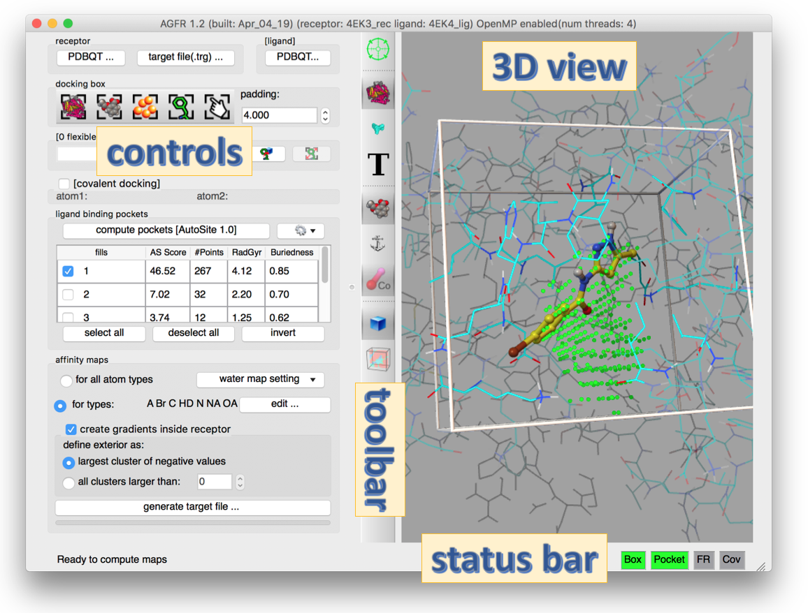
Start the GUI with ADFRsuite-1.0/bin/agfrgui. The window title shows the program version and the names of the loaded receptor and ligand. If OpenMP is enabled, it also shows the number of available hardware threads.
The GUI has four areas:
- Controls (left): stacked boxes of widgets for the steps of computing a target file for a receptor.
- 3D view (right): real-time visual feedback.
- Toolbar (middle): buttons that change the representation in the 3D view.
- Status bar (bottom): text about running computations or the next possible step, and status lights (red or green) that show whether the current docking box is valid.
Control panel
- Receptor and ligand (top): load a receptor as a PDBQT file, or open an existing target file, which sets every widget the way the target file was generated. Optionally, load a crystallographic ligand to help position the docking box and/or choose the atom types for which to compute maps.
- Docking box: buttons that size and position the box (the rectangular region over which affinity maps are computed) to enclose the entire receptor, the ligand (if loaded), a pocket (if pockets were found, see below), a set of receptor amino acids, or a box set by hand. Every button except the manual one computes the bounding box and adds the current padding on each side. The box must overlap the receptor, otherwise the BOX status light is red.
- Flexible residues (“[0 flexible residue(s)]”): optionally make receptor side chains flexible, by typing a selection string or picking residues in a tree widget. The syntax is a chain ID, a colon and a comma-separated list of residues, for example
A:LYS33,LYS89;B:ARG12. The box must cover the flexible residues, otherwise the FR light is red; a button enlarges the box to fix this. See the flexible side chains tutorial. - Covalent docking: optionally specify the 2 atoms that form the covalent bond between the receptor and the ligand, by picking them in the 3D view or typing their full names (for example
A:CYS164:SG). A covalent ligand already present in the receptor is drawn with dashed lines and can be edited by adding or removing atoms. See the covalent docking tutorial. - Ligand binding pockets: a table of the pockets that AutoSite finds in the current box. Select fills to define the binding pocket. AutoSite 1.0 and 1.1 are both available; 1.1 is slower but describes pockets better, especially for larger ligands such as peptides.
- Affinity maps: the atom types for which maps are computed. Computing maps for all AutoDock atom types is preferred, because the target file then works for any ligand. AGFR also computes water maps for hydrated docking automatically; their parameters are set here. You can also choose whether to add gradients to the maps, and set options for them.
Most buttons are enabled only once their prerequisites are met. For example, generate target file… is enabled only after a receptor is loaded, a box overlapping the receptor is defined, at least one pocket fill is selected, and that fill overlaps the box. The 4 status lights at the bottom right start red and turn green as conditions are met, which guides you through the workflow.
The maps are computed by an optimized, OpenMP-enabled version of AutoGrid4 bundled with AGFR.
GUI reference
Toolbar buttons
| Button | Function |
|---|---|
 |
Focus the view on the current docking box. |
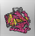 |
Show/hide the receptor as lines. Cycles through 3 modes: the entire receptor; receptor atoms inside the docking box; hidden. |
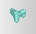 |
Show/hide the receptor surface. Cycles through 3 modes: surface of the entire receptor; surface of atoms inside the docking box; hidden. |
 |
Show/hide residue labels. Cycles through 3 modes: label all receptor residues; label residues with at least one side-chain atom in the box; hidden. |
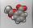 |
Show/hide the ligand. |
| Show/hide the ligand anchor atom: the ligand atom that AutoDockFR translates to the pocket fill points to build the initial pool of solutions for its genetic algorithm. | |
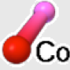 |
Show/hide the atoms forming the covalent bond. |
| Show/hide the docking box. | |
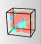 |
Show/hide the map visualization widget (orthoslices and isocontours). |
Validity status lights
Each light has up to three states: disabled, invalid (red) and valid (green).
| Light | Function |
|---|---|
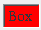 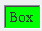 |
Box: red if the box does not overlap the receptor (no receptor atom inside the box). Never disabled; applies to every docking calculation. |
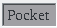 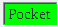 |
Pocket: enabled unless the receptor is prepared for covalent docking. Red if none of the selected (displayed) fill points is inside the box. |
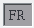 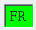 |
FR (flexible residues): enabled only when side chains have been made flexible. Red if at least one atom of these side chains is outside the box. |
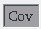 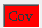 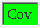 |
Cov (covalent docking): enabled only when the covalent docking check button is checked. Turns green once the 2 receptor atoms forming the covalent bond are selected. |
FAQ
How can I inspect a target file?
Open it in agfrgui, or print its metadata with about:
> about NativeCDK2BindingSite_rigid.trg
docking target file
date : Mon Jan 28 18:54:17 2019
node : fiji
platform : Darwin-17.7.0-x86_64-i386-64bit
receptor : 4EK3_rec.pdbqt
FlexRec : None
covBond : No
box :
center : 23.332 28.922 29.598
length : 17.250 16.500 12.000
size : 0046 0044 0032
spacing : 0.375
maps : C A e d OA Br NA HD N W
pocketMode : ['user', 23.332000000000001, 28.922000000000001, 29.597999999999999, 17.25, 16.5, 12.0]
#fillpts : 247 points
file : NativeCDK2BindingSite_rigid/translationPoints.npy
>
- The FAQ on CCSB refers to
AutoDockSuite-$VERSION/bin/agfrguiand.../bin/about; the install folder isADFRsuite-1.0. Written as ADFRsuite here; please confirm. - An image at the end of the CCSB overview page (
Picture1-200x175.png) is missing on the CCSB server and was dropped.